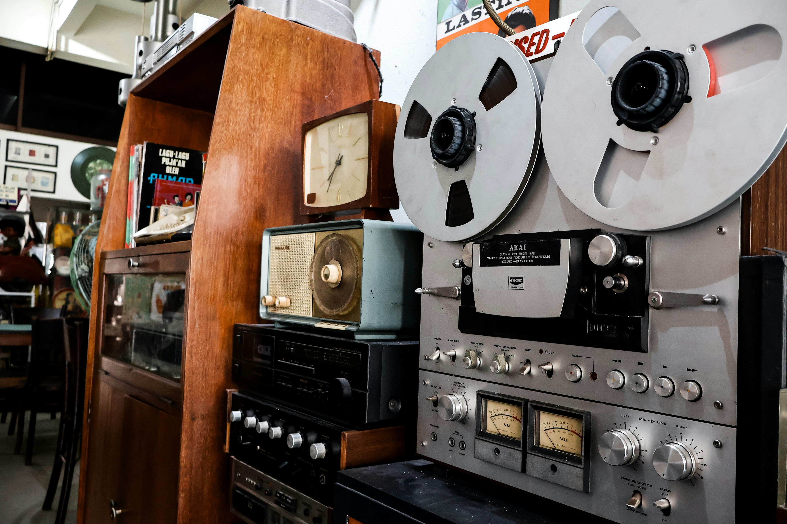
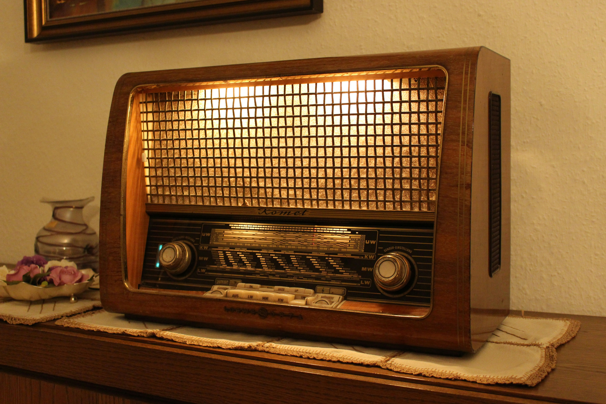

Museo della Radio
Un viaggio nel mondo della radio classica e del suono
Collezione Vintage
Scopri una selezione unica di radio storiche che hanno segnato l’evoluzione della comunicazione e del design.

1948
Radio Classica
Un modello iconico del dopoguerra italiano con dettagli in legno e design artigianale.

1962
Radio Moderna
Linee eleganti e tecnologia innovativa che hanno rivoluzionato il mondo della radio domestica.

1975
Onde Analogiche
La magia del suono analogico e delle frequenze che hanno accompagnato intere generazioni.
Info museo
Benvenuti nel nostro museo! Qui troverete un'enorme collezione di ricevitori radio vintage e scoprirete la storia dello sviluppo della radiotecnica.